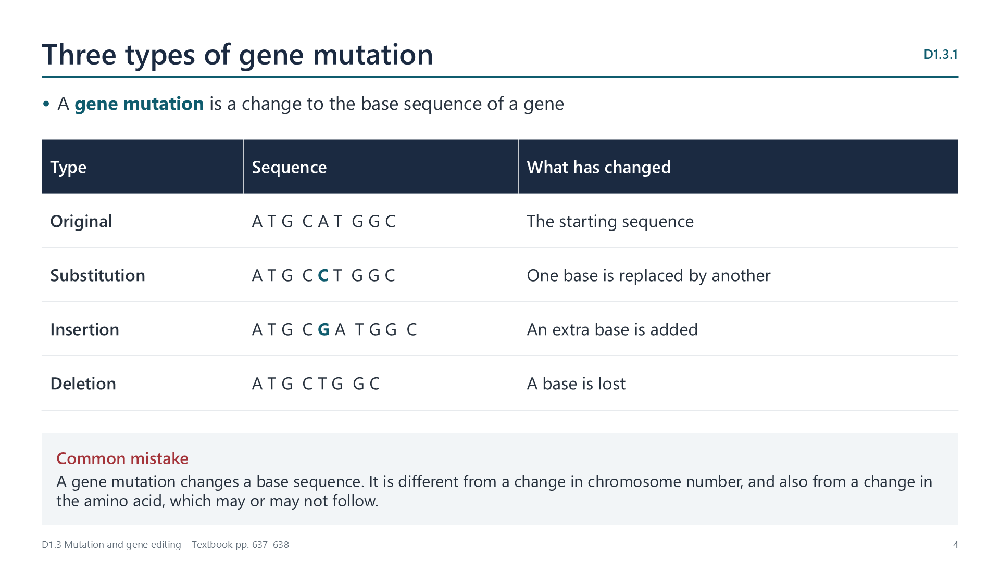
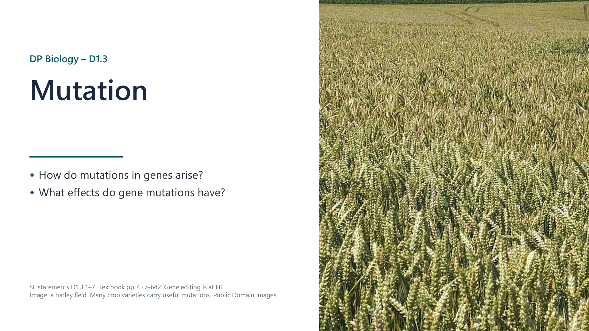
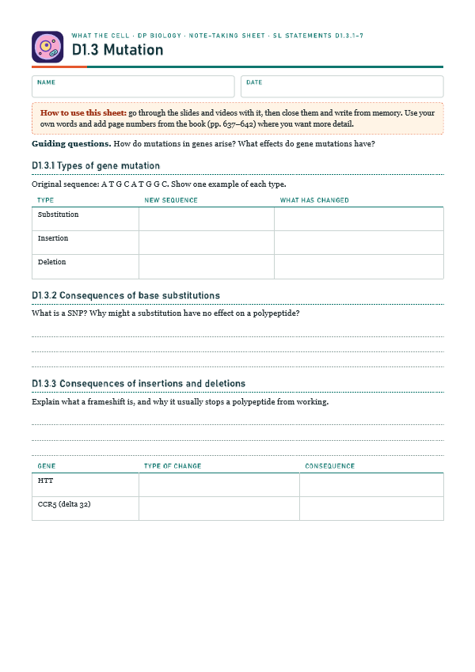
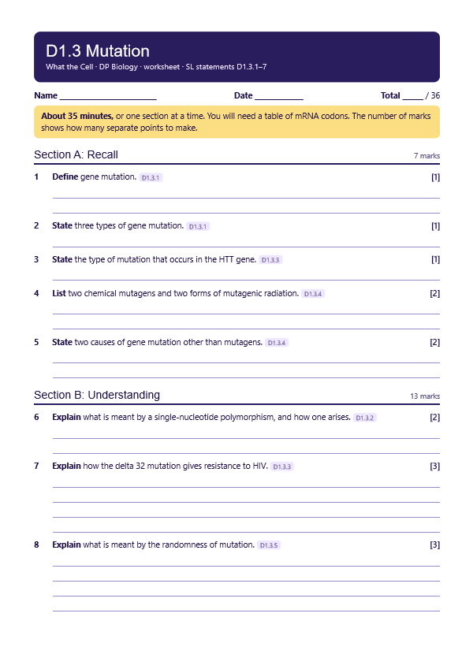
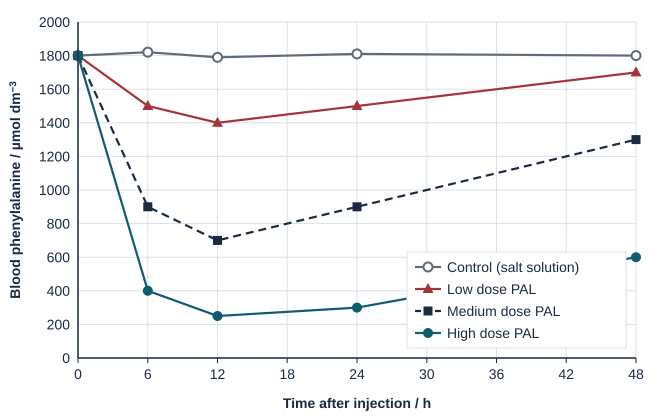

Gene mutations are changes to a base sequence
pp. 637–638
In a substitution, one base is replaced by another. In an insertion, extra bases are added, and in a deletion, bases are lost.

Written for this site from the course textbook and class slides, with page references for each statement. The chapter is on pages 637–642 of the course textbook. Image credits are on slide 15.

In a substitution, one base is replaced by another. In an insertion, extra bases are added, and in a deletion, bases are lost.
A single-nucleotide polymorphism (SNP) is a position where one base varies between individuals, and results from a substitution. Because the genetic code is degenerate, a substitution may not change the amino acid at all. If it does, usually only one amino acid changes. Rarely, a new stop codon ends the polypeptide early.
Bases are read in threes, so adding or losing one base shifts every codon that follows. This frameshift usually stops the polypeptide from working.
| Gene | Change | Effect |
|---|---|---|
| HTT | Insertion of extra CAG repeats | 40 or more repeats cause Huntington's disease, which damages neurons |
| CCR5 | Delta 32: deletion of 32 bases | The receptor does not work, so people with two copies have strong resistance to most HIV strains |
Watch out: the HTT repeat adds three bases at a time, so it keeps the reading frame. It adds extra amino acids rather than causing a frameshift.
Mutagens raise the rate of mutation. They include chemicals, such as benzene, asbestos and substances in tobacco smoke, and forms of radiation, such as short-wave UV, X-rays, gamma rays and alpha particles. Mutations also result from errors in DNA replication and repair.
Mutations can occur anywhere in a genome, although some bases are more likely to mutate than others. No natural mechanism is known for changing a particular base in order to change a trait.
Watch out: organisms do not mutate because they need to. Antibiotics do not cause resistance mutations. They kill those bacteria without them.
| Germ cells | Somatic cells | |
|---|---|---|
| Inherited? | Yes, by offspring | No |
| Spread | May be in every cell of the offspring | Only in cells descended from the mutated cell |
| Main risk | Genetic disease | Cancer, when genes that control cell division are affected |
A new allele arises only by mutation. Meiosis and fertilization mix existing alleles, but they do not create new ones. Most mutations are harmful or neutral for an individual, but in the long term they are essential for evolution by natural selection.
Select a video to play it here. Select it again to close it.
Print this guide and complete it as you work through the slides and videos. It asks for your own explanations, so close the notes while you try each section.

The self-check needs JavaScript to run.
A printable worksheet covering all seven statements, from quick recall to data questions and a longer answer. It has 36 marks and takes about 35 minutes, or you can do one section at a time.
Your teacher has the mark scheme.

Questions built on realistic experimental data, in the style of Paper 1B and Paper 2. Work them on paper and show your working. 8 marks in total. Your teacher has the mark scheme.
Phenylketonuria (PKU) is caused by a mutation in the gene for an enzyme that breaks down the amino acid phenylalanine, which then builds up in the blood and can damage the brain. Mice with PKU were given one injection of another enzyme, PAL, which also breaks down phenylalanine, at one of three doses. A control group was injected with salt solution. The safe level for people with PKU is below 360 µmol dm−3.

You will need: Short printed DNA sequence, mRNA codon table
Safety: No practical hazards.
Carry this out with your teacher's supervision and follow your school's lab rules.
In 1943 Luria and Delbruck showed that bacterial mutations arise before selection, and are not a response to it.
Mutation is called random, yet some sites mutate more often and mutagens raise the rate. Is randomness a feature of nature, or a statement about what we can predict?
Summarised in our own words. Use each code to find the exact wording in your textbook or the IB subject guide.
© 2026 Akash Parthi Bendran. Please ask before using or sharing any resources from this site: see permission to use.